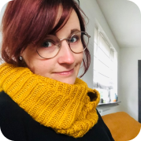

OVER MIJ

Ik ben Sannet Bodewes, grafisch vormgever met diverse creatieve vaardigheden waaronder illustratie en User interface ontwerp (UI Design). Nadat ik mijn opleiding grafisch vormgeving afgerond heb ben ik doorgerold naar Academie Minerva in Groningen om daar voor illustrator te studeren. In de periode daarna ben ik verschillende creatieve uitdagingen aangegaan. Het ontwerpen van media uitingen en het maken van illustraties is iets waar ik altijd met veel plezier aan werk en hoop dit in de toekomst nog veel te kunnen doen..
Opleidingen
2010-2014 Vormgeving B - Illustratie Hanzehoogeschool, Groningen
2006-2010 Grafische vormgeving Alfa-College, Groningen